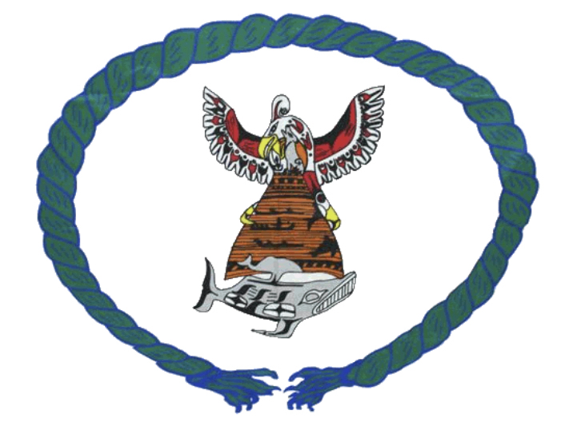

hahuupstał - teaching/learning together
hahuupstał - teaching/learning together

image sourced from unsplash
Introduction
ƛay̓aḥuʔał. ʔukłaasiš yacuusuƛ ʔuḥʔiš ƛicitaksup. histaqšiƛs ʕaaḥuusʔatḥ ʔuḥʔiš ḥiškʷiiʔatḥ.
ʔuḥuks ʔumʔiiqsaks Marion Campbell, nee Webster ʔuḥʔiiš ʔuḥuks n̓uw̓iiqsu Floyd Campbell Sr.
"Good day. My name is Patti Lindsay. I am from Ahousaht and Hesquiaht. My mother is Marion Campbell, nee Webster and my father is Floyd Campbell, Sr."
I am a beginner with my language, I am roughly pre-school aged with my knowledge.
I can read and write it, but my comprehension is minimal...for now.
My goal for this page is to share my journey with learning the ʕaaḥuusatḥ dialect of the n̓učaanuł language through the North Island College's Indigenous Language Fluency Program.
I will be adding key terms and phrases for various things such as family titles, numbers, days, months, colours, prayers, etc.
